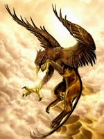

Грифон - фантастичне, міфічна істота, полуорел-Полулях, з довгим зміїним хвостом. Він символізує панування над двома сферами буття: землею (лев) і повітрям (орел). Образ грифона об'єднував символіку орла (швидкість) і лева (сила, відвага). Поєднання двох найголовніших сонячних тварин указує на загальний сприятливий характер істоти - грифон уособлює Сонце, силу, пильність, відплату. Грифони, в грецькій міфології жахливі звірі із зігнутим орлиним дзьобом на пташиній голові і тілом лева.
Давньогрецькі автори вважали, що тулуб грифона за розміром перевершувало вісім левів, разом узятих, і що він сильніший сотні орлів. Грифон здатний був підняти і понести в своє гніздо кінь з вершником або пару волів в одній упряжі.
У Греції грифон символізував могутність, впевнену у своїй силі, але при цьому проникливе і пильне. Грифон фігурує в якості тварини, наїзником якого виступає Аполлон. Ці жахливі швидкі птахи також були упряжені в колісницю богині відплати Немезіди, що символізує швидкість відплати за гріхи. Будучи втіленням Немезіди, вони обертали колесо долі.
Перше що дійшло до нас згадка про грифонів належить Геродоту (V століття до нашої ери). Він пише, що це чудовиська лев'ячі тіла і орлині пазурі, які живуть на крайній півночі Азії в Гіпербореї і охороняють від однооких аримаспов (казкових мешканців півночі) родовища золота. Есхіл називає грифонів "птіцеклювимі собаками Зевса, які не гавкають". Греки вважали, що грифони були охоронцями золотих копій скіфів. Пізніші автори додають численні подробиці до характеристики грифонів: це найсильніші з звірів (за винятком левів і слонів).
Свої гнізда грифони будують із золота, з героями і богами вони не конфліктують. У давньогрецькій культурі зображення грифонів зустрічаються на пам'ятниках мистецтва доісторичного Криту (XVII-XVI століття до нашої ери), а потім в Спарті (VIII-VII століття до нашої ери).